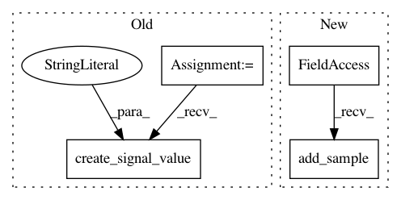

ba96e585d2ac8e1f940080d5b669976bdec8723b,agents/actor_critic_agent.py,ActorCriticAgent,learn_from_batch,#ActorCriticAgent#Any#,55
Before Change
self.action_advantages.add_sample(action_advantages)
self.unclipped_grads.add_sample(unclipped_grads)
logger.create_signal_value("Value Loss", losses[0])
logger.create_signal_value("Policy Loss", losses[1])
return total_loss
def choose_action(self, curr_state, phase=RunPhase.TRAIN):
After Change
total_loss, losses, unclipped_grads = result[:3]
self.action_advantages.add_sample(action_advantages)
self.unclipped_grads.add_sample(unclipped_grads)
self.value_loss.add_sample(losses[0])
self.policy_loss.add_sample(losses[1])
return total_loss
In pattern: SUPERPATTERN
Frequency: 3
Non-data size: 4
Instances
Project Name: NervanaSystems/coach
Commit Name: ba96e585d2ac8e1f940080d5b669976bdec8723b
Time: 2018-02-12
Author: itai.caspi@intel.com
File Name: agents/actor_critic_agent.py
Class Name: ActorCriticAgent
Method Name: learn_from_batch
Project Name: NervanaSystems/coach
Commit Name: ba96e585d2ac8e1f940080d5b669976bdec8723b
Time: 2018-02-12
Author: itai.caspi@intel.com
File Name: agents/policy_gradients_agent.py
Class Name: PolicyGradientsAgent
Method Name: learn_from_batch
Project Name: NervanaSystems/coach
Commit Name: ba96e585d2ac8e1f940080d5b669976bdec8723b
Time: 2018-02-12
Author: itai.caspi@intel.com
File Name: agents/n_step_q_agent.py
Class Name: NStepQAgent
Method Name: learn_from_batch